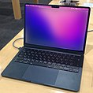
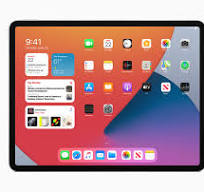
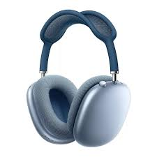

Main article: Mac (computer) A MacBook Air, in midnight color, on a wooden desk. MacBook Air with M2 chip An thin iMac in blue color on a desk. iMac with M1 chip Macintosh, commonly known as Mac, is Apple's line of personal computers that use the company's proprietary macOS operating system. Personal computers were Apple's original business line, but as of the end of 2023 they account for only about eight percent of the company's revenue.[1] There are six Macintosh computer families in production: iMac: Consumer all-in-one desktop computer, introduced in 1998. Mac Mini: Consumer sub-desktop computer, introduced in 2005. MacBook Pro: Professional notebook, introduced in 2006. Mac Pro: Professional workstation, introduced in 2006. MacBook Air: Consumer ultra-thin notebook, introduced in 2008. Mac Studio: Professional small form-factor workstation, introduced in 2022. Often described as a walled garden, Macs use Apple silicon chips, run the macOS operating system, and include Apple software like the Safari web browser, iMovie for home movie editing, GarageBand for music creation, and the iWork productivity suite. Apple also sells pro apps: Final Cut Pro for video production, Logic Pro for musicians and producers, and Xcode for software developers. Apple also sells a variety of accessories for Macs, including the Pro Display XDR, Apple Studio Display, Magic Mouse, Magic Trackpad, and Magic Keyboard.
Main article: iPhone iPhone 15 (left) and iPhone 15 Pro (right) The iPhone is Apple's line of smartphones, which run the iOS operating system. The first iPhone was unveiled by Steve Jobs on January 9, 2007. Since then, new models have been released every year. When it was introduced, its multi-touch screen was described as "revolutionary" and a "game-changer" for the mobile phone industry. The device has been credited with creating the app economy. iOS is one of the two largest smartphone platforms in the world alongside Android. The iPhone has generated large profits for the company, and is credited with helping to make Apple one of the world's most valuable publicly traded companies.[178] As of the end of 2023, the iPhone accounts for more than half of the company's revenue.[1]
Main article: iPad The iPad is Apple's line of tablets which run iPadOS. The first-generation iPad was announced on January 27, 2010. The iPad is mainly marketed for consuming multimedia, creating art, working on documents, videoconferencing, and playing games. The iPad lineup consists of several base iPad models, and the smaller iPad Mini, upgraded iPad Air, and high-end iPad Pro. Apple has consistently improved the iPad's performance, with the iPad Pro adopting the same M1 and M2 chips as the Mac; but the iPad still receives criticism for its limited OS.[179][180] As of September 2020, Apple has sold more than 500 million iPads, though sales peaked in 2013.[181] The iPad still remains the most popular tablet computer by sales as of the second quarter of 2020,[182] and accounted for seven percent of the company's revenue as of the end of 2023.[1] Apple sells several iPad accessories, including the Apple Pencil, Smart Keyboard, Smart Keyboard Folio, Magic Keyboard, and several adapters. Other products
Apple Watch Ultra Apple makes several other products that it categorizes as "Wearables, Home and Accessories".[183] These products include the AirPods line of wireless headphones, Apple TV digital media players, Apple Watch smartwatches, Beats headphones, HomePod smart speakers, and the Vision Pro mixed reality headset. As of the end of 2023, this broad line of products comprises about ten percent of the company's revenues.[1]
Apple offers a broad line of services, including advertising in the App Store and Apple News app, the AppleCare+ extended warranty plan, the iCloud+ cloud-based data storage service, payment services through the Apple Card credit card and the Apple Pay processing platform, digital content services including Apple Books, Apple Fitness+, Apple Music, Apple News+, Apple TV+, and the iTunes Store. As of the end of 2023, services comprise about 22% of the company's revenue.[1] In 2019, Apple announced it would be making a concerted effort to expand its service revenues.[184]
Scroll Up